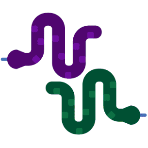

¿Qué hay de nuevo en Python 3.11?
👋
Marzo 2020
Estamos de vuelta
>>> import datetime
>>> import humanize
>>> delta = datetime.datetime(2022, 10, 27) - datetime.datetime(2020, 3, 4)
>>> humanize.i18n.activate("es_ES")
>>> print(repr(humanize.precisedelta(delta)))
"2 años, 7 meses y 23 días"Python Málaga
Sobre mí Nekmo
|
Programando en Python desde 2006 |
{kind=link}
Python 2.5
¿Qué hay de nuevo en Python 3.11?
Listado de cambios
PEP 654: Exception Groups y except*.
PEP 678: Enriquecer excepciones con notas.
PEP 680: tomllib.
PEP 657: Mejoras en las indicaciones de error en los tracebacks.
Opción
-Pen la línea de comandos y variable de entornoPYTHONSAFEPATH.PEP 646: Variadic Generics.
PEP 655: TypedDict Required/NotRequired.
PEP 673: Tipo Self.
PEP 675: Tipo de cadena literal arbitraria
PEP 681: Data Class Transforms
Módulos obsoletos (PEP 594), Py_UNICODE API eliminada (PEP 624) y macros convertidas a funciones estáticas en línea (PEP 670).
Gracias
PEP 654: Exception Groups y except*
class NameError(Exception):
pass
def validate_name(value: str) -> None:
if not value.istitle():
raise NameError("El nombre debe empezar por mayúscula.")
form = {"name": "nekmo"}
try:
validate_name(form["name"])
except NameError as err:
print(err) # Salta el error from typing import Iterable, Tuple, Dict, Callable
class NumberError(Exception):
pass
def validate_age(value: str) -> None:
if not value.isdigit():
raise NumberError("La edad debe ser un valor numérico.")
form = {"name": "nekmo", "age": "diez"}
form_validations = [("name", validate_name), ("age", validate_age)]
exceptions = []
for form_key, input_validation in input_validations:
try:
input_validation(form[form_key])
except Exception as err:
exceptions.append(value)
if exceptions:
raise ExceptionGroup("errors message", exceptions)except*
try:
read_inputs()
except* NameError as eg:
# Si hay errores NameError esto se llama
print(f"Errores en el nombre: {eg.exceptions}")
except* NumberError as eg:
# Y si hay errores NumberError, esto también
print(f"Errores numéricos: {eg.exceptions}")raise ExceptionGroup("nested",
[
ValueError(654),
ExceptionGroup("imports",
[
ImportError("no_such_module"),
ModuleNotFoundError("another_module"),
]
),
TypeError("int"),
]¡Continuamos!
PEP 678: Enriquecer excepciones con notas
try:
raise TypeError('bad type')
except Exception as e:
e.add_note('¡Ah, ah, ah! ¡No has dicho la palabra mágica!')
raise Traceback (most recent call last):
File "<stdin>", line 2, in <module>
TypeError: bad type
¡Ah, ah, ah! ¡No has dicho la palabra mágica!+ Exception Group Traceback (most recent call last):
| File "test.py", line 4, in test
| def test(x):
|
| File "hypothesis/core.py", line 1202, in wrapped_test
| raise the_error_hypothesis_found
| ^^^^^^^^^^^^^^^^^^^^^^^^^^^^^^^^
| ExceptionGroup: Hypothesis found 2 distinct failures.
+-+---------------- 1 ----------------
| Traceback (most recent call last):
| File "test.py", line 6, in test
| assert x > 0
| ^^^^^^^^^^^^
| AssertionError: assert -1 > 0
|
| Falsifying example: test(
| x=-1,
| )
+---------------- 2 ----------------
| Traceback (most recent call last):
| File "test.py", line 5, in test
| assert x < 0
| ^^^^^^^^^^^^
| AssertionError: assert 0 < 0
|
| Falsifying example: test(
| x=0,
| )
+------------------------------------PEP 657: Mejoras en las indicaciones de error en los tracebacks
Traceback (most recent call last):
File "distance.py", line 11, in <module>
print(manhattan_distance(p1, p2))
File "distance.py", line 6, in manhattan_distance
return abs(point_1.x - point_2.x) + abs(point_1.y - point_2.y)
AttributeError: 'NoneType' object has no attribute 'x' Traceback (most recent call last):
File "distance.py", line 11, in <module>
print(manhattan_distance(p1, p2))
^^^^^^^^^^^^^^^^^^^^^^^^^^
File "distance.py", line 6, in manhattan_distance
return abs(point_1.x - point_2.x) + abs(point_1.y - point_2.y)
^^^^^^^^^
AttributeError: 'NoneType' object has no attribute 'x' Traceback (most recent call last):
File "query.py", line 37, in <module>
magic_arithmetic('foo')
File "query.py", line 18, in magic_arithmetic
return add_counts(x) / 25
^^^^^^^^^^^^^
File "query.py", line 24, in add_counts
return 25 + query_user(user1) + query_user(user2)
^^^^^^^^^^^^^^^^^
File "query.py", line 32, in query_user
return 1 + query_count(db, response['a']['b']['c']['user'], retry=True)
~~~~~~~~~~~~~~~~~~^^^^^
TypeError: 'NoneType' object is not subscriptablePEP 680: Tomllib
Tom's Obvious, Minimal Language
# This is a TOML document
title = "TOML Example"
[owner]
name = "Tom Preston-Werner"
dob = 1979-05-27T07:32:00-08:00
[database]
enabled = true
ports = [ 8000, 8001, 8002 ]
data = [ ["delta", "phi"], [3.14] ]
temp_targets = { cpu = 79.5, case = 72.0 }
[servers]
[servers.alpha]
ip = "10.0.0.1"
role = "frontend"import tomllib
with open("fichero.toml") as f:
tomllib.load(f)Novedades en el tipado
PEP 646: Variadic Generics
from typing import Tuple, Generic, TypeVarTuple, TypeVar
T = TypeVar('T')
Ts = TypeVarTuple('Ts') # Esta es la novedad
# Aquí usamos el TypeVarTuple como definición para el tipo
class Array(Generic[*Ts]):
def multiply(self, x: int) -> Tuple[*Ts]: # Y aquí como return
...
def add_dimension(self, t: T) -> Tuple[T, *Ts]:
...
# Ts en este caso será [float, int, str]
my_array: Array[float, int, str] = Array()
my_array.multiply(2) # El tipo devuelto será Tuple[float, int, str]
# El tipo devuelto será Tuple[str, float, int, str]
my_array.add_dimension("spam")PEP 655: TypedDict Required/NotRequired
from typing import TypedDict
class Person(TypedDict, total=False):
name: str # Queremos que sea obligatorio pero no lo es
surname: str # Queremos que sea obligatorio pero no lo es
age: int
person: Person = {"name": "Juan", "surname": "Luna"} from typing import TypedDict
class PersonRequired(TypedDict, total=True):
name: str
surname: str
class Person(PersonRequired, total=False):
age: int
person: Person = {"name": "Juan", "surname": "Luna"} from typing import NotRequired, Required, TypedDict
class Person(TypedDict): # total=True por defecto
name: str
surname: str
age: NotRequired[int] # age no será requerido por el NotRequired[]
person: Person = {"name": "Juan", "surname": "Luna"} from typing import NotRequired, Required, TypedDict
class Person(TypedDict, total=False):
name: Required[str]
surname: Required[str]
age: int
person: Person = {"name": "Juan", "surname": "Luna"}PEP 673: Tipo Self
from typing import Self
class Customer:
def __init__(self, name: str, age: int):
self.name = name
self.age = age
def __copy__(self) -> Self:
return self.__class__(self.name, self.age)PEP 675: LiteralString
from typing import LiteralString, Iterable, Any
def execute(sql: LiteralString, *params: Iterable[Any]):
...
# Esta línea validará, porque pasamos los parámetros de forma segura
execute("SELECT * FROM data WHERE user_id = ?", [123])
# Esta línea dará error, porque se modifica el string de entrada previamente
execute(f"SELECT * FROM data WHERE user_id = {user_id}") # MEEH! Error.Más seguridad
PEP 681: Data Class Transforms
# La clase ``ModelBase`` está definida en la biblioteca.
@typing.dataclass_transform()
class ModelBase: ...
# La clase ``ModelBase`` puede ser usado para crear nuevos modelos,
# similar a como se hace en estos frameworks.
class CustomerModel(ModelBase):
id: intdef dataclass_transform(
*,
eq_default: bool = True,
order_default: bool = False,
kw_only_default: bool = False,
field_specifiers: tuple[type | Callable[..., Any], ...] = (),
**kwargs: Any,
) -> Callable[[_T], _T]: ...¿Qué otras novedades hay?
Nuevo argumento
-Pen la línea de comandos y variable de entornoPYTHONSAFEPATHpara evitar ejecutar código inseguro.PEP 594: Eliminar módulos muertos de la librería estándar (deprecated, a eliminar en 3.13).
PEP 624: Eliminadas las APIs de codificación de Py_UNICODE.
PEP 670: Convertir macros a funciones en la API en C de Python.
¡Y es más rápido! (10-60% respecto Python 3.10).
Más información
¿Cómo puedo conseguirlo?
¡¡Ya disponible!!
¿Desde los fuentes?
Python te necesita
¡Muchas gracias!
Referencias
¿Y la presentación?
Contactar
Sitio web: nekmo.com
Email: contacto@nekmo.com
Twitter: @nekmocom
Telegram: @nekmo
Jabber: nekmo@nekmo.org